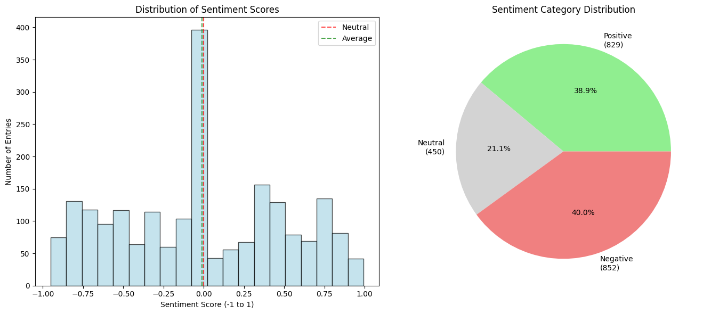
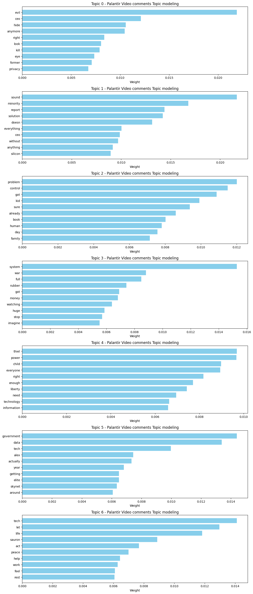
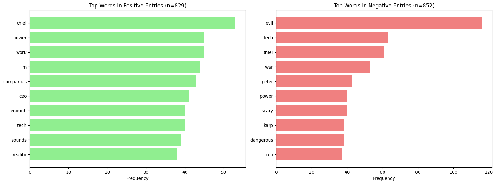
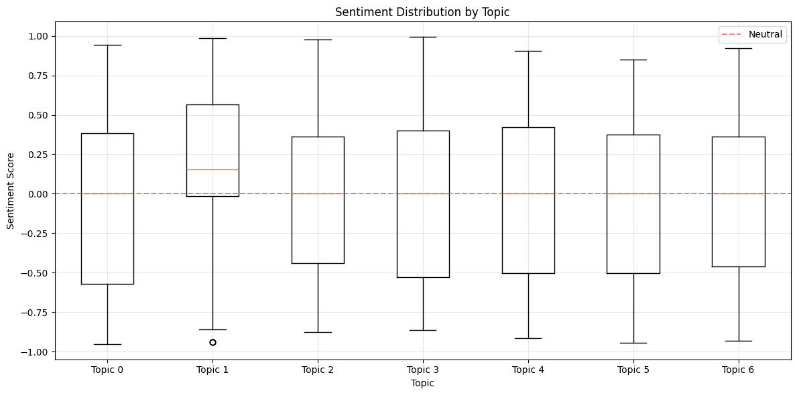

Research Question
What kind of sentiment patterns do people have about Palantir online, and how does that pattern reflect broader public fears about privacy, government surveillance, and data-driven technology?
Background: My research question sources the original ideas from my own proposal and my own experience with this company. My brainstorming about Homeworks 4-1 and 4-2 got me in from the beginning, wanting to study something in my everyday media feed. Palantir kept popping up over and over again on Reels, TikTok, and other short-form platforms, usually in videos that alluded to AI, predictive policing, military contracts, or anything surveillance-related, and was never portrayed in a positive light. I assumed that the way most people perceived the company was likely the same as I did, as I had never seen Palantir attract positive remarks in any platform I navigated. This personal interaction and also the willingness to learn whether there are abnormalities in that perception throughout different demographics or whether it was just part of my algorithm steered my project in this direction. Initially, I thought of scraping several platforms, including Reddit and investing websites, but I ended up realizing, upon collecting comments, that it would be much cleaner and more consistent to focus on a single YouTube video. This shift also helped refine the question from a broad How does the public view Palantir? into a more focused exploration about emotional tone and larger cultural concerns. It also fits in better with the tools we learned in class, such as topic modeling and sentiment analysis. Overall, the question reflects my interest in understanding why Palantir feels so controversial online and whether the public discourse supports or challenges the assumptions that I started with.
Data & Methods
Dataset
Data Source: In my original project proposal, I planned on sourcing a lot of my data from Reddit threads because I thought Reddit would give me a more diverse and in depth pool of opinions. But after meeting with Dr. Rode, he directed me toward a more realistic and streamlined way to build my dataset. Instead of sticking to Reddit, he suggested that I search on YouTube for “Palantir privacy,” since privacy concerns are the biggest factor that I am trying to explore in my project. Through this more specific search technique, we found a video that fit my topic perfectly, and I decided to use the comment section of this video (https://youtu.be/DZ95Gmvg_D4) as my dataset.
Collection Method: I used the Instant Data Scraper tool that we were shown in class for a previous activity. I have used this tool several times across this course and others, so I am familiar with the type of dataset it produces. I scraped the YouTube comments directly from the video and exported everything as a CSV file. Working with one main CSV file made the workflow simple and straightforward, which was important because I wanted to spend more time on analysis instead of spending forever gathering data across multiple platforms.
Dataset Size: My cleaned dataset has 2,131 unique comments. The dataset came from one YouTube video, but the video had over ten thousand of comments at the time I scraped it. Even though it is a single video, the volume of text made it a serviceable source for my analysis.
Ethical Considerations: Since I was working with YouTube comments, I only collected publicly available text and removed all usernames and identifying details so that no commenter could be recognized. I kept only the comment text itself. Even though YouTube comments are public, I still wanted to reduce any harm by anonymizing everything in the CSV. I also did not scrape anything hidden, private, or behind an account wall. One limitation is that only the people who chose to comment appear in the dataset, and I cannot represent viewers who had strong thoughts but did not post. It is also possible that the tone and editing style of the viral video shaped the kinds of comments people wrote, but overall I still felt comfortable using this dataset because everything was public and I anonymized the full export.
Analysis Methods
Tools: Python (pandas, VADER, Gensim)
- Term Frequency Analysis: I used pandas to clean and tokenize the text, removed my large stopword list (the same one used in HW4-1 and HW4-2), and then calculated term counts to see which words appeared most often. I then turned those results into bar charts, like the top twenty words visualization in my notebook and PNG exports. This helped me see the dominant themes in the dataset without reading thousands of comments manually.
- Sentiment Analysis (VADER): I applied VADER to generate a sentiment score for every comment in the CSV. After scoring, I used pandas to categorize each comment as positive, neutral, or negative, and created plots such as the sentiment histogram and pie chart to show the distribution. Even though VADER sometimes misread sarcasm, it still helped me capture emotional patterns across the full dataset and gave me something measurable to compare against the topic modeling results.
- Topic Modeling (Gensim LDA): After cleaning and lemmatizing the comments, I used Gensim’s LDA model to generate topic clusters. I experimented with different numbers of topics in the notebook and selected the one that produced clearly interpretable clusters. I then used matplotlib to create the topic bar charts showing the highest-weighted words in each topic. This method helped me see which ideas naturally grouped together in the comments and how themes around privacy, control, technology, and government surveillance appeared across the dataset.
Results & Analysis
Sentiment Analysis Results
When I first looked at the VADER sentiment results, the distribution kind of surprised me. The dataset had 852 negative comments, 829 positive, and 450 neutral. At face value, this almost looks like the audience is split down the middle or even leaning a tiny bit positive. But VADER is known for misreading sarcasm, joking negativity, and anything that is written in a more casual tone. A lot of comments that were clearly negative ended up labeled as positive or neutral. Once I read through examples manually, it was obvious that the positivity count was inflated.

Code Example
Here's how I implemented the sentiment analysis using vaderSentiment:
# Apply sentiment analysis to your entire dataset
def get_sentiment_score(text):
"""Get compound sentiment score for a text"""
scores = analyzer.polarity_scores(text)
return scores['compound']
# Apply sentiment analysis to your entire dataset
df['sentiment_score'] = df['clean_text_sentiment'].apply(get_sentiment_score) # Fill in: what function?
print("✅ Sentiment analysis complete for entire dataset!")
print(f"\nSentiment score range: {df['sentiment_score'].min():.3f} to {df['sentiment_score'].max():.3f}")
print(f"Average sentiment: {df['sentiment_score'].mean():.3f}")
Topic Modeling Results
Using Gensim's LDA implementation, I identified 7 major topics. These clusters lean toward ideas of government surveillance, digital profiling, and a loss of personal autonomy. While there were some topics that mentioned work, solutions, tech, and companies in a more neutral or positive way, the most emotionally charged topics are very much aligned with fear and suspicion.



Key Findings
The computational analysis revealed three major insights:
- Finding 1: Even though VADER initially suggested that the sentiment distribution was almost evenly split between positive and negative comments, a closer look showed that this positivity was inflated. VADER often misread sarcasm, joking negativity, or comments that were just casually written, so a lot of comments that were clearly negative ended up labeled as positive or neutral.
- Finding 2: The vocabulary of the dataset painted a very different picture than the raw sentiment numbers. After filtering my stopwords, the most frequent meaningful word in the entire dataset was evil, followed by terms like thiel, power, government, tech, war, reality, scary, and karp. This shows a strong emotional connection between Palantir and fear, distrust, or anxiety.
- Finding 3: Topic modeling supported this pattern by highlighting themes centered on control, surveillance, danger, and loss of autonomy. Topics included words like kill, hide, control, dangerous, Skynet, watching, money, and war. Even though a few topics mentioned tech, solutions, or companies in a more neutral way, the most emotionally charged clusters match broader public concerns about privacy and government surveillance.
Detailed Results
Breaking down the sentiment distribution:
| Sentiment Category | Count | Percentage | Avg. Compound Score |
|---|---|---|---|
| Positive | 829 | 38.9% | 0.523 |
| Neutral | 450 | 21.1% | -0.001 |
| Negative | 852 | 40% | -0.526 |
What Surprised Me
I initially predicted that the public would react negatively toward Palantir, mostly because that is how I have always seen them across TikTok and Instagram Reels. My algorithm constantly pushed videos framing the company as a surveillance tool tied to government tracking or AI. But when I saw the VADER results at first, the data almost looked balanced or even slightly positive. After digging deeper, I realized that the positivity was inflated by VADER misreading sarcasm and also by the fact that this was a viral YouTube video. Many viewers praised the creator for the editing or the insightfulness of the video instead of praising Palantir. When I looked at term frequency and topic modeling, the tone became much clearer. The emphasis on words like evil and the topics centered around control and surveillance showed that the negativity I expected really was there, just hidden under the surface. This challenged my understanding because it showed how important it is to interpret computational results carefully instead of just trusting the first numbers that appear.
Overview
For this project, I explored how people talk about Palantir online and whether their emotional responses reflect larger public fears about privacy, government surveillance, and data driven technology. This idea came directly out of my experiences with Palantir content constantly showing up on my own algorithm on TikTok and Instagram Reels. Since I had never seen the company framed in a positive light (outside of an investing context), I wanted to test whether the broader public actually felt the same way. In Homeworks 4-1 and 4-2, we learned how to use computational tools to analyze text at scale, so this project was the natural continuation of that work. After meeting with Dr. Rode, I shifted from scraping Reddit to focusing on a single YouTube video by searching “Palantir privacy.” Using the Instant Data Scraper, I pulled thousands of comments and cleaned the dataset in Google Colab. Even though it came from one video, it was still large enough to analyze with the methods we practiced in class, like term frequency, sentiment analysis with VADER, and topic modeling. There were many limitations, especially because the video was viral and many comments praised the creator instead of Palantir, but the dataset still revealed a clear emotional pattern. The results showed a lot of fear based language, with “evil” being the most common meaningful word. Topic modeling also highlighted themes related to control, surveillance, and danger. Combining humanities perspectives with computational tools helped me understand not just what people said, but I learned how to analyze text at scale, apply my findings, and talk about why these ideas matter in a larger cultural conversation about privacy and big tech.
Integration and Reflection
What computational methods revealed: The Python tools let me look at everything all at once rather than drowning in over 2000 individual comments. Term frequency and topic modeling showed me thats people kept talking about stuff like evil, government watching them, control, basically all of the negative things I expected to see around a company like Palantir. Doing these all by hand would have taken an absurd amount of time. The scale at which we measured is what actually made the patterns obvious.
What close reading added: But close reading helped me catch things like the sarcasm in some comments that the VADER system didn’t pick up on, and may have even contributed to the words that were labled as positive.
📐 Classification Logic
This project honestly fits Classification Logic pretty well because the models keep trying to shove everything into neat little buckets. Positive, negative, neutral, or these tidy topics the algorithm thinks exist, even though humans definitely do not speak in clean categories. The way VADER classified things basically shaped how the dataset looked at first, and if I didn’t check it manually, I would’ve believed the “positive” stuff even though a lot of it wasn’t positive at all. So yeah, the categories simplify things in a way that can be kind of misleading.
Critical question: What nuances are lost when we reduce complex cultural expressions to computational categories?
🤖 AI Agency
The AI Agency idea also applies here because the tools look like they’re “finding meaning,” but they’re really not. The LDA model just groups words together. VADER just spits out a number. None of these tools understand anything about why people are freaked out about privacy or why they compare Palantir to stuff like Skynet. That part is still all human interpretation. The model is just making correlations, I have the responsibility of interpreting it and deciding if it was actually negative or not like I hypothesized.
Limitations & Future Directions
What I would do differently: If I had more time I probably would’ve used three or four videos instead of just one, because this one was pretty viral and the comment section may have been influenced by the quality of the video, which is to be expected in a comment section. I assume that that skewed the sentiment ratings to be more positive than they would’ve been otherwise, had they just been analyzing comments about Palantir and their practices. Maybe in the future I would also compare YouTube with Reddit and do some compare and contrast between the two platforms.
Questions that remain: I’m still curious if people talk about Palantir the same way everywhere or if it’s mostly certain online communities that lean super negative. Also not sure how much some factors like age, or online habits affect how people feel about privacy stuff.
Confidence in conclusions: I feel pretty confident in the general emotional tone because multiple methods pointed in the same direction, especially the word frequencies and topics. The only thing I’m more cautious about is the exact sentiment numbers because VADER misses sarcasm constantly. But overall, the negativity toward Palantir still showed up pretty clearly once I looked past the surface level labels.